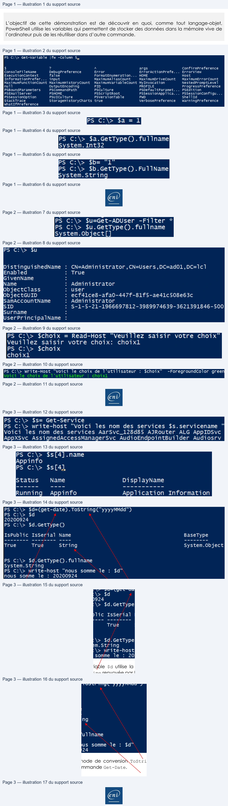

Transcription du document du Drive TSSR. La mise en forme est adaptée au Web ; les compléments IA du portail sont présentés séparément.
Initiation à PowerShell
Démonstration 01 du module 4
L’objectif de cette démonstration est de découvrir en quoi, comme tout langage-objet,
PowerShell utilise les variables qui permettent de stocker des données dans la mémoire vive de
l’ordinateur puis de les réutiliser dans d’autre commande.
• La console PowerShell dispose de variables réservées comme nous avons pu le voir avec $PSItem. Nous allons étudier les façons de travailler avec les variables.
• La commande Get-Variable permet de connaître toutes les variables disponibles actuellement dans la console PowerShell.
• Pour déclarer une nouvelle variable, on utilise le caractère $ suivi du symbole = puis de la valeur à attribuer à la variable.
Attention au type de variable ! Le fait d’attribuer la valeur 1 type la variable en INT.
Pour obtenir le type de variable, on utilise la méthode getType()
Le paramètre FullName permet d’afficher le type complet de la variable.
Lorsque l’on souhaite déclarer une variable de type String qui va contenir une chaîne de caractères, il faut encadrer les caractères avec des doubles quotes.
La variable $b est de type SystemString car la valeur 1 est encadrée avec des doubles quotes.
Page 1/3
© ENI – Tous droits réservés
PS C:\> Get-Variable
|fw -Column
5,
$
?
A
args
ConfirmPreference
ConsoleFileName
DebugPreference
Error
ErrorActionPrefe...
Errorview
Executioncontext
false
FormatEnumeration...
HOME
Host
InformationPrefer...
input
MaximumAliasCount
MaximumDrivecount
MaximumErrorCount
MaximumFunctionCount MaximumHistoryCount
MaximumVariableCount MyInvocation
NestedPromptLevel
null
OutputEncoding
PID
PROFILE
ProgressPreference
PsBoundParameters
PSCommandPath
Psculture
PsDefaultParamet...
PSEdition
PSEmai 1Server
PSHOME
PsScriptRoot
PSSessionApplica...
PSSessionConfigu..
Pssessionoption
PSUICuIture
PsVersionTable
PwD
ShellId
StackTrace
StorageHistoryCharts true
VerbosePreference
warningPreference
WhatifPreference
PS C:\> $a = 1
PS C:\> $a.GetType().fullname
System. Int32
=
_ Mu
PS C:\> $b=
"1
PS C:\> $b.GetType().FullName
System.string
@
Initiation à PowerShell
Les variables vont contenir également des objets, qui par la suite vont être réutilisés dans d’autres
traitements.
Pour contenir des objets dans une variable, on déclare la variable puis on assigne un résultat de
commande à cette variable.
On obtient une variable de type System.Object qui contient le résultat de la commande Get- Aduser.
Lorsque la variable est déclarée, elle est utilisable dans la console.
Pour visualiser son contenu, il suffit de saisir son nom précédé du $.
La variable peut également servir de conteneur à une saisie dans la console. Elle va être combinée à la commande Read-Host
La variable peut être utilisable avec la commande Write-Host pour afficher le contenu dans une chaîne de caractères avec des outils de mise en forme.
La valeur de la variable $choix est affichée dans la chaîne de caractères.
Les variables de type System.Object peuvent être utilisées pour afficher une ou plusieurs propriétés d’un ou des objets qu’elles contiennent.
On utilise le . à la suite de la variable pour indiquer le nom de la propriété à afficher.
Page 2/3
© ENI – Tous droits réservés
PS C:\> $u=Get-ADUser
-Filter
*
PS C:\> $u.GetType().ful1lname
Ssystem.Object[]
PS
C:\>
$u
DistinguishedName
: CN=Administrator
, CN=Users ,DC=ad01,DC=1cl
Enabled
:
True
GivenName
:
Name
:
Administrator
ObjectClass
:
user
ObjectGUID
:
ecf41ce8-afa0-447f-81Ff5-ae41c508e63c
SamAccountName
:
Administrator
SID
:
S-1-5-21-1966697812-3989974639-3621391846-500
Surname
:
UserPrincipalName
:
PS C:\> $choix = Read-Host “Veuillez saisir votre choix"
Veuillez saisir votre choix: choixl
PS C:\> $choix
choixl
@
Initiation à PowerShell
Il est possible de sélectionner un seul objet dans la variable en lui indiquant une valeur d’index.
On sélectionne un seul objet avec les [] puis on sélectionne une seule propriété avec le .
Avec les variables de type Objet on peut également se servir des méthodes contenues dans le
type d’objet.
La variable $d utilise la méthode de conversion ToString pour convertir une valeur de type DateTime renvoyée par la commande Get-Date.
En fin de conversion, on obtient une valeur de type string utilisable dans une commande Write- Host.
Page 3/3
© ENI – Tous droits réservés
PS C:\> $s= Get-Service
PS C:\> write-host “Voici
les nom des services $s.servicename
"
Voici
les nom des services AarSvc_128d85 AJRouter ALG AppIDSvc
AppxSvc AssignedAccessManagerSvc AudioEndpointBuilder
Audiosrv
PS C:\> $s[4].name
Appinfo
PS C:\> $s[41
Status
Name
Disp layName
Running
Appinfo
Application
Information
PS C:\> $d=(get-date).ToStringC"yyyyMMdd")
PS C:\>
$d
20200924
PS C:\> $d.GetType()
IsPublic
IsSerial
Name
BaseType
True
True
string
System.Object
PS C:\> $d.GetType()
. ful Iname
System.String
PS C:\> write-host “nous somme
le
:
$d"
nous
somme
le
:
20200924
@
